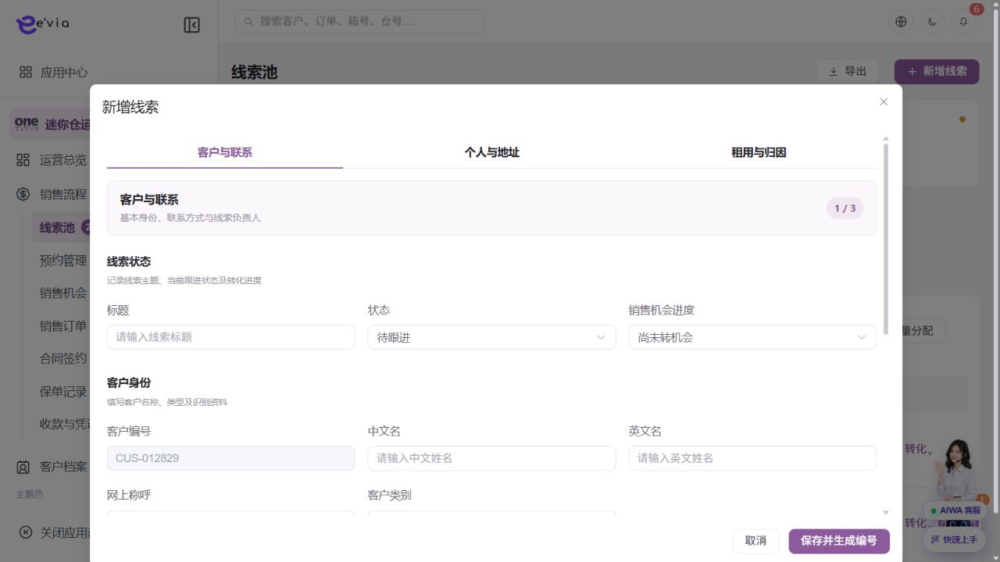
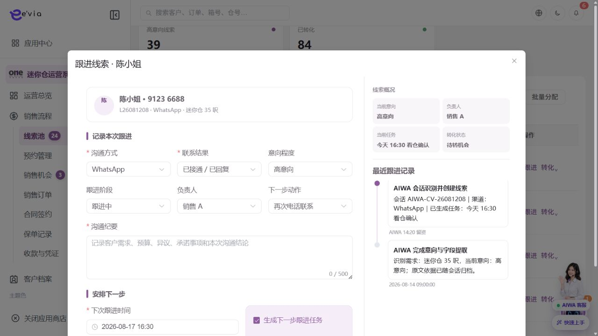

PRODUCT REQUIREMENTS
线索池 PRD
下载 Word 文档线索池 PRD
运营后台研发详细需求规格 · V2.0 · 2026-09-08
1 文档目标与范围
统一承接 WhatsApp、企业微信、小程序、电话、官网和广告线索，完成去重、分配、跟进与转化。 本文档明确页面字段、操作流程、业务规则、跨端契约、权限和验收条件。
| 属性 | 内容 |
|---|---|
| 文档编号 | OS-OPS-PRD-02 |
| 产品基线 | AiwaBot产品原型 V3.2 与 OneStorage运营后台原型 V1.1 |
| 版本 | V2.0 2026-09-08 |
1.1 原型界面依据
以下截图直接取自 AiwaBot产品原型-v3.2.html，用于核对页面布局、入口、字段和操作位置。


2 页面结构与查询
2.1 指标卡片
| 指标 | 交互要求 |
|---|---|
| 本月新增线索 | 显示当前值、统计周期、对比或目标、截止时间，并可按相同口径下钻。 |
| 待分配 | 显示当前值、统计周期、对比或目标、截止时间，并可按相同口径下钻。 |
| 今日待跟进 | 显示当前值、统计周期、对比或目标、截止时间，并可按相同口径下钻。 |
| 高意向线索 | 显示当前值、统计周期、对比或目标、截止时间，并可按相同口径下钻。 |
| 已转化 | 显示当前值、统计周期、对比或目标、截止时间，并可按相同口径下钻。 |
| 本月线索转化率 | 显示当前值、统计周期、对比或目标、截止时间，并可按相同口径下钻。 |
2.2 筛选条件
| 筛选项 | 规则 |
|---|---|
| 线索编号、客户、电话关键字 | 支持组合查询、重置和返回保留。 |
| 跟进状态 | 支持组合查询、重置和返回保留。 |
| 来源渠道 | 支持组合查询、重置和返回保留。 |
| 意向程度 | 支持组合查询、重置和返回保留。 |
| 负责人 | 支持组合查询、重置和返回保留。 |
| 团队 | 支持组合查询、重置和返回保留。 |
| 创建时间 | 支持组合查询、重置和返回保留。 |
| 下次跟进时间 | 支持组合查询、重置和返回保留。 |
3 列表字段规格
| 字段ID | 字段 | 来源 | 展示与交互规则 |
|---|---|---|---|
| OS-OPS-PRD-02-L01 | 选择框 | 服务端/关联主数据 | 用于批量操作；跨页选择需显式提示已选数量。 |
| OS-OPS-PRD-02-L02 | 线索 | 业务主域 | 详情与导出保持一致；空值显示—，不使用模拟值补齐。 |
| OS-OPS-PRD-02-L03 | 来源 | 业务主域 | 详情与导出保持一致；空值显示—，不使用模拟值补齐。 |
| OS-OPS-PRD-02-L04 | 会话 ID | 服务端主键或业务编号 | 完整展示并支持复制；唯一且不可使用展示名称代替。 |
| OS-OPS-PRD-02-L05 | 需求 | 业务主域 | 详情与导出保持一致；空值显示—，不使用模拟值补齐。 |
| OS-OPS-PRD-02-L06 | 意向 | 业务主域 | 详情与导出保持一致；空值显示—，不使用模拟值补齐。 |
| OS-OPS-PRD-02-L07 | 负责人 | 服务端/关联主数据 | 显示姓名，离职或停用账号保留历史名称。 |
| OS-OPS-PRD-02-L08 | 下一步任务 | 业务主域 | 详情与导出保持一致；空值显示—，不使用模拟值补齐。 |
| OS-OPS-PRD-02-L09 | 跟进状态 | 服务端枚举 | 以标签显示；筛选、导出和详情使用同一枚举文案。 |
| OS-OPS-PRD-02-L10 | 转化状态 | 服务端枚举 | 以标签显示；筛选、导出和详情使用同一枚举文案。 |
| OS-OPS-PRD-02-L11 | 操作 | 服务端/关联主数据 | 根据allowedActions显示查看、编辑及状态动作；后端再次鉴权。 |
4 新增与编辑表单
| 字段ID | 字段 | 控件 | 必填 | 校验与保存规则 |
|---|---|---|---|---|
| OS-OPS-PRD-02-F01 | 标题 | 文本框 | 条件必填 | 去除首尾空格；保存原始值与标准化值。 |
| OS-OPS-PRD-02-F02 | 状态 | 单选或下拉选择 | 必填 | 选项来自服务端字典；提交编码值，界面显示名称。 |
| OS-OPS-PRD-02-F03 | 销售机会进度 | 下拉选择 | 必填 | 默认“尚未转机会”；转化后由系统回写，不允许人工越级修改。 |
| OS-OPS-PRD-02-F04 | 客户编号 | 只读文本 | 系统生成 | 首次保存时由服务端生成；后续只读，并作为跨端客户主键。 |
| OS-OPS-PRD-02-F05 | 中文名 | 文本框 | 条件必填 | 去除首尾空格；保存原始值与标准化值。 |
| OS-OPS-PRD-02-F06 | 英文名 | 文本框 | 条件必填 | 去除首尾空格；保存原始值与标准化值。 |
| OS-OPS-PRD-02-F07 | 网上称呼 | 文本框 | 条件必填 | 去除首尾空格；保存原始值与标准化值。 |
| OS-OPS-PRD-02-F08 | 客户类别 | 单选或下拉选择 | 必填 | 选项来自服务端字典；提交编码值，界面显示名称。 |
| OS-OPS-PRD-02-F09 | 指定的使用者 | 人员选择 | 条件必填 | 选项受团队和数据范围限制；为空时线索只能处于待分配状态。 |
| OS-OPS-PRD-02-F10 | 团队 | 单选或下拉选择 | 必填 | 选项来自服务端字典；提交编码值，界面显示名称。 |
| OS-OPS-PRD-02-F11 | 区号 | 下拉选择 | 必填 | 默认+852；与流动电话组合保存E.164标准值。 |
| OS-OPS-PRD-02-F12 | 流动电话 | 电话号码输入 | 必填 | 香港号码按8位校验；与区号组合查重并保存E.164标准值。 |
| OS-OPS-PRD-02-F13 | 电子邮件 | 邮箱输入 | 选填 | 校验邮箱格式，转小写保存检索值；原始展示值保留。 |
| OS-OPS-PRD-02-F14 | 其他电话 | 区号加电话号码 | 必填 | 保存标准化E.164值；香港号码按8位校验。 |
| OS-OPS-PRD-02-F15 | 出生日期 | 日期选择 | 选填 | 不得晚于当前日期；按权限显示，导出默认脱敏。 |
| OS-OPS-PRD-02-F16 | HKID | 敏感文本输入 | 个人客户条件必填 | 校验香港身份证格式；加密存储，列表及无权角色仅显示掩码。 |
| OS-OPS-PRD-02-F17 | BR No. | 文本输入 | 企业客户条件必填 | 移除空格和分隔符后校验商业登记号码并保存标准化值。 |
| OS-OPS-PRD-02-F18 | 个人地址 | 多行文本 | 个人客户条件必填 | 与地区、分区、邮递区号和国家组成结构化地址；最多300字。 |
| OS-OPS-PRD-02-F19 | 地区 | 单选或下拉选择 | 必填 | 选项来自服务端字典；提交编码值，界面显示名称。 |
| OS-OPS-PRD-02-F20 | 分区 | 文本框 | 条件必填 | 去除首尾空格；保存原始值与标准化值。 |
| OS-OPS-PRD-02-F21 | 邮递区号 | 文本框 | 条件必填 | 去除首尾空格；保存原始值与标准化值。 |
| OS-OPS-PRD-02-F22 | 个人地址国家 | 国家下拉 | 填写个人地址时必填 | 提交ISO国家或地区编码；默认中国香港。 |
| OS-OPS-PRD-02-F23 | 公司地址国家 | 国家下拉 | 填写公司地址时必填 | 提交ISO国家或地区编码；默认中国香港。 |
| OS-OPS-PRD-02-F24 | 公司地址 | 多行文本 | 企业客户条件必填 | 与公司地区、公司分区、公司邮递区号和国家组成结构化地址。 |
| OS-OPS-PRD-02-F25 | 公司地区 | 单选或下拉选择 | 必填 | 选项来自服务端字典；提交编码值，界面显示名称。 |
| OS-OPS-PRD-02-F26 | 公司分区 | 文本框 | 条件必填 | 去除首尾空格；保存原始值与标准化值。 |
| OS-OPS-PRD-02-F27 | 公司邮递区号 | 文本框 | 条件必填 | 去除首尾空格；保存原始值与标准化值。 |
| OS-OPS-PRD-02-F28 | 商议金额 | 金额输入 | 条件必填 | 输入大于等于0，最多两位小数；服务端以最小货币单位重算。 |
| OS-OPS-PRD-02-F29 | 呎吋 | 数字输入 | 条件必填 | 输入期望面积，必须大于0；单位固定为平方呎并随请求保存。 |
| OS-OPS-PRD-02-F30 | 查询地区 | 单选或下拉选择 | 必填 | 选项来自服务端字典；提交编码值，界面显示名称。 |
| OS-OPS-PRD-02-F31 | 其他地区 | 单选或下拉选择 | 必填 | 选项来自服务端字典；提交编码值，界面显示名称。 |
| OS-OPS-PRD-02-F32 | 工业 | 文本框 | 条件必填 | 去除首尾空格；保存原始值与标准化值。 |
| OS-OPS-PRD-02-F33 | 活动 | 检索选择 | 选填 | 仅可选择当前有效且适用的营销活动；保存活动ID和版本。 |
| OS-OPS-PRD-02-F34 | 来源 | 下拉选择 | 必填 | 选项来自线索来源字典；系统来源只读，人工新增可选择。 |
| OS-OPS-PRD-02-F35 | 介绍人推荐码 | 文本输入 | 选填 | 统一转大写校验；不得自荐，绑定成功后不可直接覆盖。 |
| OS-OPS-PRD-02-F36 | 返回原因 | 多行文本 | 条件必填 | 最多500字；拒绝或异常原因不得只输入空白。 |
| OS-OPS-PRD-02-F37 | 要求 | 多行文本 | 条件必填 | 最多500字；拒绝或异常原因不得只输入空白。 |
| OS-OPS-PRD-02-F38 | 描述 | 多行文本 | 条件必填 | 最多500字；拒绝或异常原因不得只输入空白。 |
| OS-OPS-PRD-02-F39 | 备注 | 多行文本 | 条件必填 | 最多500字；拒绝或异常原因不得只输入空白。 |
4.1 新增线索操作步骤
| 步骤 | 用户操作 | 系统处理 |
|---|---|---|
| 客户与联系 | 录入身份、联系方式和负责人。 | 校验手机号、邮箱并查重。 |
| 个人与地址 | 录入证件和个人或公司地址。 | 证件加密，地址结构化保存。 |
| 租用与归因 | 录入预算、面积、地区、来源、需求和备注。 | 校验活动、推荐码和来源。 |
| 保存 | 点击保存并生成编号。 | 生成或关联客户、L编号、时间线和任务。 |
4.2 跟进线索字段
| 字段ID | 字段 | 控件 | 必填 | 业务规则 |
|---|---|---|---|---|
| OS-OPS-PRD-02-FU01 | 沟通方式 | 单选或下拉选择 | 必填 | 选项来自服务端字典；提交编码值，界面显示名称。 |
| OS-OPS-PRD-02-FU02 | 联系结果 | 下拉选择 | 必填 | 选项来自联系结果字典；未接通、拒绝等结果需与下一步动作和阶段联动。 |
| OS-OPS-PRD-02-FU03 | 意向程度 | 下拉选择 | 必填 | 取低、中、高等配置枚举；保存后回写列表意向标签。 |
| OS-OPS-PRD-02-FU04 | 跟进阶段 | 单选或下拉选择 | 必填 | 选项来自服务端字典；提交编码值，界面显示名称。 |
| OS-OPS-PRD-02-FU05 | 负责人 | 单选或下拉选择 | 必填 | 选项来自服务端字典；提交编码值，界面显示名称。 |
| OS-OPS-PRD-02-FU06 | 下一步动作 | 多行文本 | 未完成时必填 | 说明下一次具体动作，最多200字；与下次跟进时间共同生成任务。 |
| OS-OPS-PRD-02-FU07 | 沟通纪要 | 多行文本 | 必填 | 记录客户需求、预算、异议、承诺事项和本次结论，最多500字。 |
| OS-OPS-PRD-02-FU08 | 下次跟进时间 | 日期时间选择 | 未完成时必填 | 必须晚于当前服务器时间。 |
| OS-OPS-PRD-02-FU09 | 生成下一步跟进任务 | 复选框 | 选填 | 选中后以负责人和下次跟进时间创建关联任务。 |
| OS-OPS-PRD-02-FU10 | 同步建立销售机会 | 复选框 | 选填 | 选中后与当前写操作使用同一clientRequestId创建关联销售机会。 |
5 操作与处理流程
| 操作ID | 操作 | 前置条件与系统处理 | 结果与失败处理 |
|---|---|---|---|
| OS-OPS-PRD-02-A01 | 新增线索 | 按客户与联系、个人与地址、租用与归因三个页签录入；先查重，保存后生成唯一 L 编号和首条操作记录。 | 成功后刷新详情和时间线；失败保留输入并显示错误码。 |
| OS-OPS-PRD-02-A02 | 查看会话来源 | 有关联 AIWA 会话时打开原始上下文、摘要和字段提取依据；无权限时只显示会话编号。 | 成功后刷新详情和时间线；失败保留输入并显示错误码。 |
| OS-OPS-PRD-02-A03 | 批量分配 | 仅可选择待分配或本人有转派权限的记录；指定负责人和团队后逐条校验数据范围并返回成功、失败清单。 | 成功后刷新详情和时间线；失败保留输入并显示错误码。 |
| OS-OPS-PRD-02-A04 | 跟进线索 | 记录沟通方式、联系结果、意向、阶段、负责人、下一步动作、沟通纪要和下次跟进时间。 | 成功后刷新详情和时间线；失败保留输入并显示错误码。 |
| OS-OPS-PRD-02-A05 | 生成跟进任务 | 勾选后创建任务并回写下一步任务；重复提交不得生成重复任务。 | 成功后刷新详情和时间线；失败保留输入并显示错误码。 |
| OS-OPS-PRD-02-A06 | 转预约 | 需有客户、电话、意向地区和预约类型；生成 AP 编号并在原线索保留关联关系。 | 成功后刷新详情和时间线；失败保留输入并显示错误码。 |
| OS-OPS-PRD-02-A07 | 转销售机会 | 完成资格确认后生成 OP 编号，继承客户、需求、预算、来源、负责人和沟通摘要。 | 成功后刷新详情和时间线；失败保留输入并显示错误码。 |
| OS-OPS-PRD-02-A08 | 标记无效 | 必须选择无效原因；关闭未完成任务，保留历史，不允许物理删除已产生转化记录的线索。 | 成功后刷新详情和时间线；失败保留输入并显示错误码。 |
| OS-OPS-PRD-02-A09 | 导出 | 继承当前筛选和数据范围；手机号、邮箱、HKID按导出权限脱敏。 | 成功后刷新详情和时间线；失败保留输入并显示错误码。 |
6 状态机与业务规则
| 对象 | 状态流转 |
|---|---|
| 线索池 | 跟进状态：待分配→待跟进→跟进中→已完成；转化状态：未转化→待转机会→已转预约/已转机会→已转订单；可进入无效/取消 |
| 异步任务 | 待执行→执行中→成功/失败→重试/人工处理 |
| 规则ID | 业务规则 |
|---|---|
| OS-OPS-PRD-02-R01 | 流动电话必填；香港号码去除空格后按8位校验，国际号码同时保存区号 |
| OS-OPS-PRD-02-R02 | 按客户编号、标准化手机号、邮箱和渠道外部ID查重；疑似重复时允许关联既有客户但不得静默合并 |
| OS-OPS-PRD-02-R03 | AIWA创建必须保存conversationId、原始渠道、提取版本和字段置信度 |
| OS-OPS-PRD-02-R04 | 下一次跟进时间不得早于当前时间；选择已完成时必须填写联系结果与纪要 |
| OS-OPS-PRD-02-R05 | 转预约或机会成功后禁止再次生成同类型有效对象 |
| OS-OPS-PRD-02-R06 | 销售订单必须从销售机会推进，线索池不得直接创建销售订单 |
| OS-OPS-PRD-02-R07 | 负责人为空时跟进状态只能为待分配 |
| OS-OPS-PRD-02-R08 | 所有写请求携带clientRequestId和expectedVersion，重复请求返回首次结果 |
| OS-OPS-PRD-02-R09 | 服务端返回allowedActions，前端仅据此展示按钮，后端仍逐动作鉴权 |
| OS-OPS-PRD-02-R10 | 列表、详情、关联选择器、统计和导出使用同一数据范围 |
| OS-OPS-PRD-02-R11 | 创建、编辑、状态流转、导出、下载和审批均记录操作审计 |
| OS-OPS-PRD-02-R12 | 第三方调用失败不得伪装主业务成功，进入可重试或人工处理状态 |
7 BPMN流程

客户、后台、执行端和领域服务节点必须与状态机一致。
8 跨端交互规则
| 规则ID | 交互规则 |
|---|---|
| OS-OPS-PRD-02-X01 | 小程序咨询和AIWA会话生成线索时使用clientRequestId保证幂等 |
| OS-OPS-PRD-02-X02 | 后台分配后向负责人发送站内通知，必要时同步工单/任务小程序 |
| OS-OPS-PRD-02-X03 | 转预约后客户小程序展示预约确认；客户改期或取消回写关联线索时间线 |
| OS-OPS-PRD-02-X04 | 转机会、转订单后客户档案展示完整转化链路 L→AP/OP→SO |
•
客户小程序仅访问本人数据，工单小程序仅访问本人或团队任务
•
深链打开后重新校验身份、权限和最新状态
•
金额、库存、状态和allowedActions必须回源
•
离线重试沿用同一clientRequestId
9 接口与事件契约
| 契约 | 路径或事件 | 要求 |
|---|---|---|
| 列表 | GET /ops/v1/leads | 分页、排序、筛选、数据范围和脱敏 |
| 详情 | GET /ops/v1/leads/{id} | version、关联对象、时间线和allowedActions |
| 新增 | POST /ops/v1/leads | clientRequestId幂等 |
| 编辑 | PATCH /ops/v1/leads/{id} | expectedVersion并发控制 |
| 动作 | POST /ops/v1/leads/{id}/actions/{action} | 动作级权限和状态前置 |
| 事件 | 线索池.Changed.v1 | eventId、aggregateId、version和occurredAt |
10 异常与边界处理
| 场景 | 处理 |
|---|---|
| 400字段错误 | 字段级提示并保留输入 |
| 403无权限 | 拒绝并记录审计 |
| 404不存在 | 不泄露额外对象信息 |
| 409版本冲突 | 刷新后重新操作 |
| 重复请求 | 返回首次幂等结果 |
| 第三方失败 | 进入重试或人工处理 |
11 验收标准
| 验收ID | 验收条件 |
|---|---|
| OS-OPS-PRD-02-AC01 | 列表字段、筛选、分页、排序和导出一致 |
| OS-OPS-PRD-02-AC02 | 表单字段、必填和跨字段校验完整 |
| OS-OPS-PRD-02-AC03 | 所有动作同时校验权限、数据范围和状态 |
| OS-OPS-PRD-02-AC04 | 重复请求无重复记录或副作用 |
| OS-OPS-PRD-02-AC05 | 跨端编号、状态、金额和时间一致 |
| OS-OPS-PRD-02-AC06 | 异常和空数据有明确反馈 |
| OS-OPS-PRD-02-AC07 | 敏感字段按权限脱敏并审计 |
| OS-OPS-PRD-02-AC08 | P0规则具有自动化测试 |